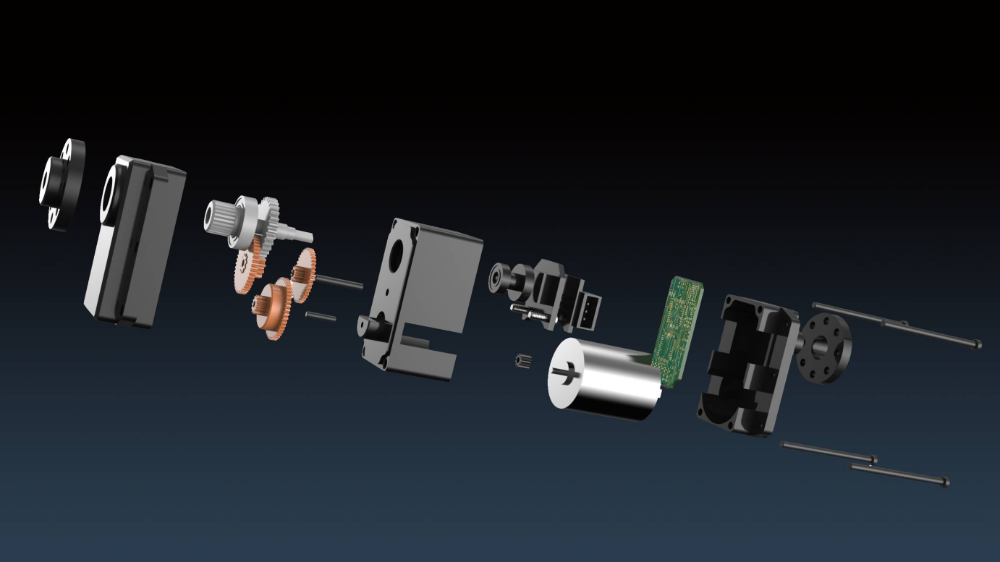

- 1. XGO-Mini K210 Architecture Diagram
- 2. Structure introduction
- 3. Servo introduction
- 4. Batteries and Chargers
- 5. Introduction to the host computer K210
XGO-Mini K210 Architecture Diagram
The core architecture of the XGO-Mini K210 version is the K210 artificial intelligence module, and the AI-related tasks of the robot dog are all completed by the host computer. The lower computer is developed by MCU, which is responsible for the power management of the robot dog, the servo drive and the core gait algorithm, etc., and encapsulates a complete serial communication protocol for the convenience of the upper computer.
Structure introduction
The main structure of XGO-Mini K210 is composed of 1.5mm thick aluminum alloy structural parts and all-metal magnetic encoder servos. The legs are composed of silicone shanks and nylon foot pads. The AI module and driver board of the head are composed of 4pin signal lines. Connection, built-in 2 18650 lithium batteries, the specific structure is shown in the figure below, here is XGO-Mini K210 3D model download. 
- AI module
- AI module bracket
- Robot dog front cover
- Robot dog back cover
- Self-locking switch
- 18650 2S battery
- Core driver board
- Bottom cover of robot dog
- Charging port
- Metal High Speed Magnetic Encoding Bus Servo
- ③The front cover of the robot dog, the ④the back cover of the robot dog and the ⑧ the bottom cover of the robot dog are used as the robot dog frame to connect various components. The front and rear legs are fixed on the front and rear sides of the bottom cover of the robot dog through four screws respectively; the core drive board is fixed in the middle of the bottom cover of the robot dog through four plastic screws.
- Each leg is equipped with three servos as elbow, shoulder and hip joints. Mechanically, the three joint servos are fixedly connected using aluminum alloy structural parts. Electrically, the elbow joint servo and shoulder joint servo, shoulder joint servo and hip joint servo, and hip joint servo and the core drive board are each connected with a servo wire, so that the core drive board can drive and control all the servos. joint servo.
- The AI module is fixed on the front cover of the robot dog together with the AI module bracket, and is connected to the core driver board through the AI module serial port cable.
- The switch is fixed on the back cover of the robot dog with a nut, and is connected with the core driver board. The switch is a self-locking type, that is, it does not rebound after being pressed and the robot dog is in a continuous power-on state; after pressing it again, the robot dog is powered off and will lie down and shut down after 3 to 4 seconds.
- There are two 18650 2S batteries, which are installed on the battery holder on the core driver board through the correct positive and negative poles.
- The charging hole is integrated on the core driver board and exposed from the bottom cover of the robot dog.
Servo introduction
The modular servo joint of XGO-Mini is composed of a DC hollow cup motor, a reduction gear set, a 12-bit magnetic encoder and an integrated control circuit. It has its own closed-loop control and planning algorithm, high-speed bus communication, 360-degree angle control, and supports speed, Position, current, temperature feedback and control parameter adjustment functions provide high-performance servo drives for robots. The customized joint provides PID parameter adjustment, optimizes the joint impedance characteristics (compliance), and based on the basic kinematic gait planning, combined with the consideration of the center of gravity and the feedback of the IMU, as well as the requirements of the upper-level control commands, real-time can be performed adjustment. At the same time, a large speed ratio and high-efficiency reducer is adopted, which ensures the flexibility and improves the load-to-weight ratio. 
Batteries and Chargers
XGO-Mini adopts 18650 2500 mAh 3C standard battery, adopts wide voltage charger design, and provides four kinds of charging plugs of national standard, American standard, British standard and EU.
Introduction to the host computer K210
As the main control module of artificial intelligence-related applications, the AI module has basic computer vision recognition functions and inference functions of machine learning models, which can help implement entry-level and advanced AI applications.
AI Module Motherboard
- Built-in Kanzhi K210 chip, using RISC-V processor architecture, with audio-visual integration, independent IP core and strong programmable ability.
- Support Micro SD card to store images, audio, video, machine learning models and other data.
- Socket for integrated camera module for front-facing shooting.
screen module
- Integrated camera module socket for rear camera use;
- 1.54-inch LCD full-color screen, displaying pictures in JPG, BMP and other formats;
- Can be used for external 2.5mm audio interface;
Camera Module
- The resolution of the AI camera is 30w pixels, which can be plugged into the screen module or AI module respectively to become a front or rear camera.
Introduction to the lower computer STM32
- Select STM32F405RGT6, which is ARM®Cortex®-M4 32-bit RISC core, operates at 168Mhz, has 64 pins, meets the computing power requirements of real-time kinematics inverse solution, and has enough interfaces and peripherals Communication, use the serial port to communicate with the serial port servo, the IIC interface reads the gyroscope MPU9250 data, and the system uses two 18650 lithium batteries for power supply.